Husk søknadsfristen 15. april
Se alle våre studier her!
Videreutdanning + Nettstudier
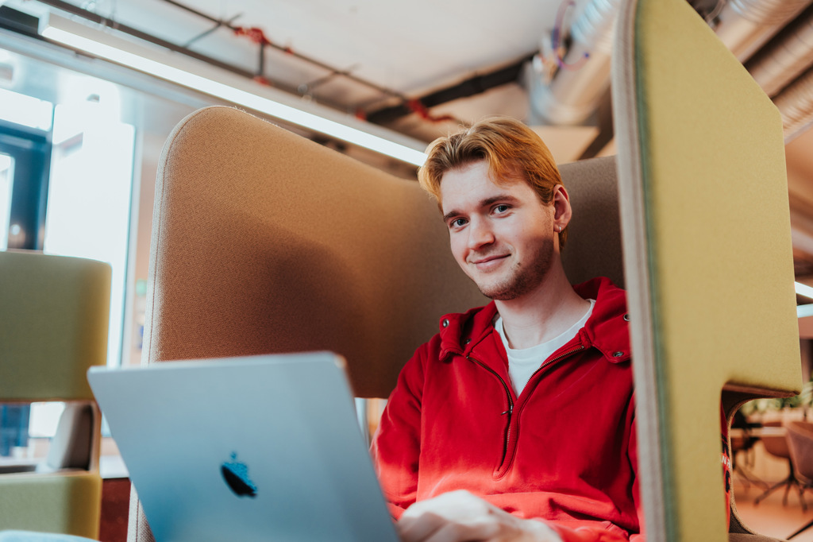
Derfor bør du velge Kristiania
Vil du vite mer om hvorfor du bør velge Kristiania? Les denne!Les hvorfor du bør velge Kristiania.9 av 10 Kristiania-studenter får jobb etter studiene
Det er fordi Kristiania tilbyr studier utviklet på lag med arbeidslivet!Les mer om studentenes jobbsituasjon
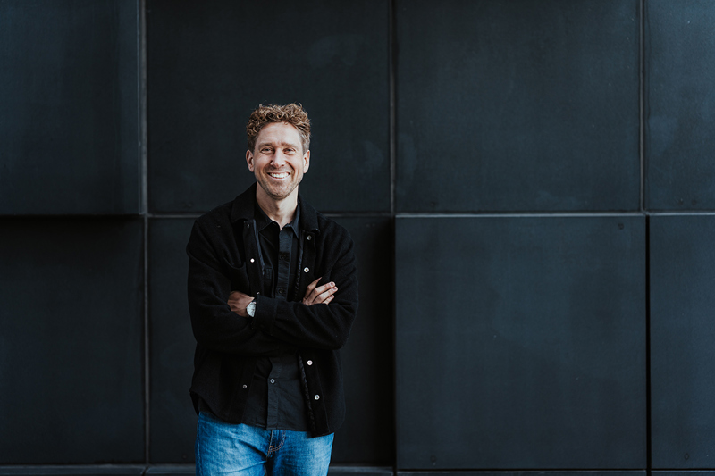
Spørsmål om utdanning?
Bestill en time med våre studentambassadører helt fram til søknadsfristen og spør om alt du lurer på. Velg mellom besøk på campus, videomøte eller telefonsamtale – eller få omvisning.
Bestill uforpliktende veiledning her!
Nyheter
- Nyheter
Dette er de mest populære studiene
Usikker på hva du skal studere? Kanskje denne listen gir deg noen tips!Dette er de mest populære studiene 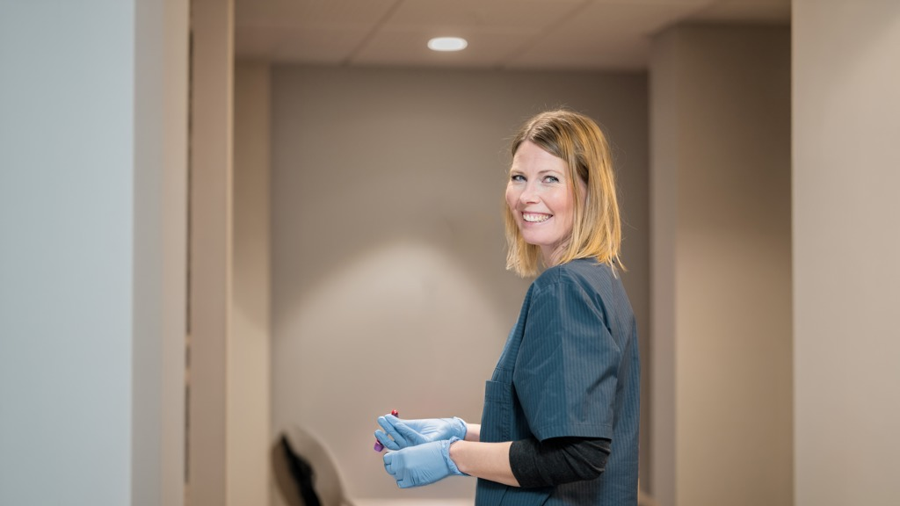
NyheterVelg fullfinansierte studier fra Kristiania
Det offentlige dekker studieavgiften for disse studiene!Velg fullfinansierte studier fra Kristiania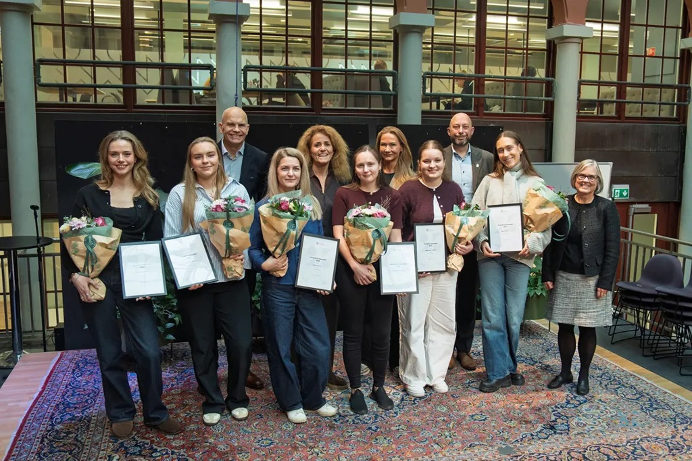
NyheterKristianiastipender: Nå kan du få dekket studiene
Søk om stipend til gratis gjennomføring av bachelorgrad på Høyskolen Kristiania innen 15. april 2026.Kristianiastipender: Nå kan du få dekket studiene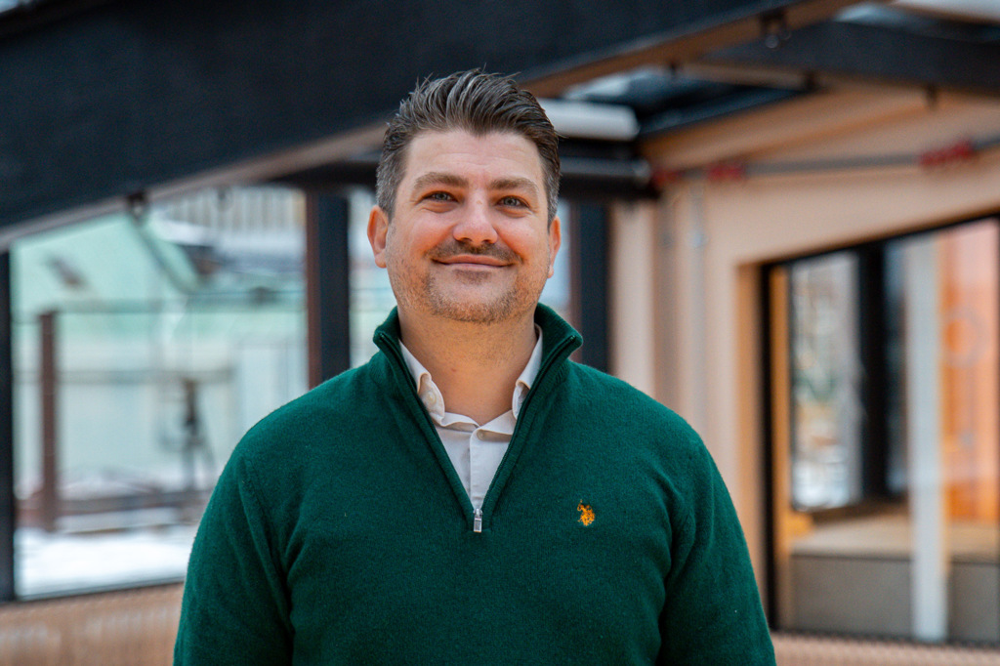
NyheterMBA ga selvtillit og mer ansvar på jobb: – Jeg får både inspirasjon og nettverk
Kenan hadde behov for at studiene var fleksible, slik at hverdagen med fulltidsjobb og som far til to små skulle gå opp.MBA ga selvtillit og mer ansvar på jobb: – Jeg får både inspirasjon og nettverk- Nyheter
Dette er årets nye studier
Kristiania følger opp arbeidslivets behov og lanserer flere nye studier i 2026Dette er årets nye studier
Kalender
- 09.april
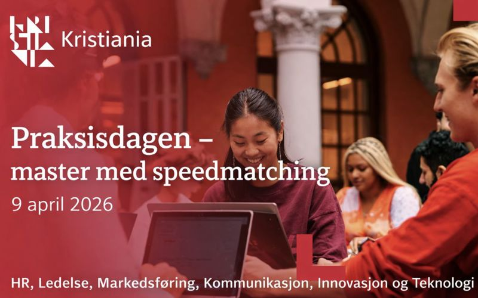
Torsdag 9. april arrangeres Praksisdagen for masterstudenter. Virksomheter som tilbyr praksisplasser innenfor HR/ledelse, markedsføring, kommunikasjon, innovasjon og teknologi kommer til Kristiania!
- 13.april
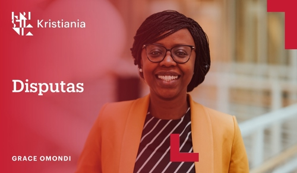
Grace Omondi forsvarer avhandlingen sin Visualizing Instructional Communication of Risk During Prolonged Crises: Developing Theory for Research and Practice for graden ph.d. i kommunikasjon og ledelse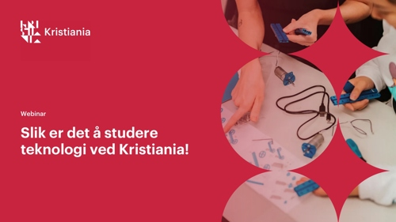
Hvordan er det egentlig å være teknologistudent ved Kristiania? Få svaret i vårt åpne webinar – møt studenter og faglærere, og få innsikt i studier, prosjekter og muligheter.
- 14.april
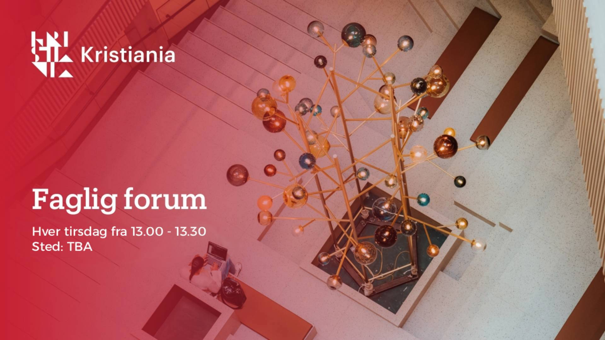
Faglig forum arrangeres som ukentlige seminarer hver tirsdag. Forskere og fagansatte ved School of Communication, Leadership and Management presenterer noe de nylig har jobbet med, noe de jobber med nå, eller om dagsaktuelle temaer som de ha kunnskap om.
Kunnskap Kristiania
Flere forskningsnyheter
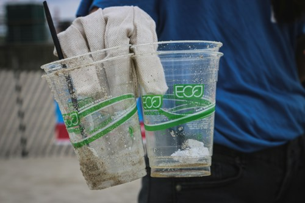
Kunnskap KristianiaLes merHer er verktø yene for å avsløre grønnvasking
Slik kan vi skille lovnader fra reell omstilling.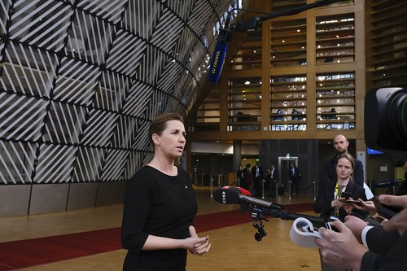
Kunnskap KristianiaLes merHva nådde ut i Mette Frederiksens valginnspurt på Facebook?
Felles for Fredriksens Facebook poster var at de rammet inn enkeltsaker som trygghet, ansvar og styring.- Kunnskap KristianiaLes mer
Hva vet vi om manipulasjon?
Metodene som forklarer hvorfor vi blir manipulert til å handle mot egne interesser.
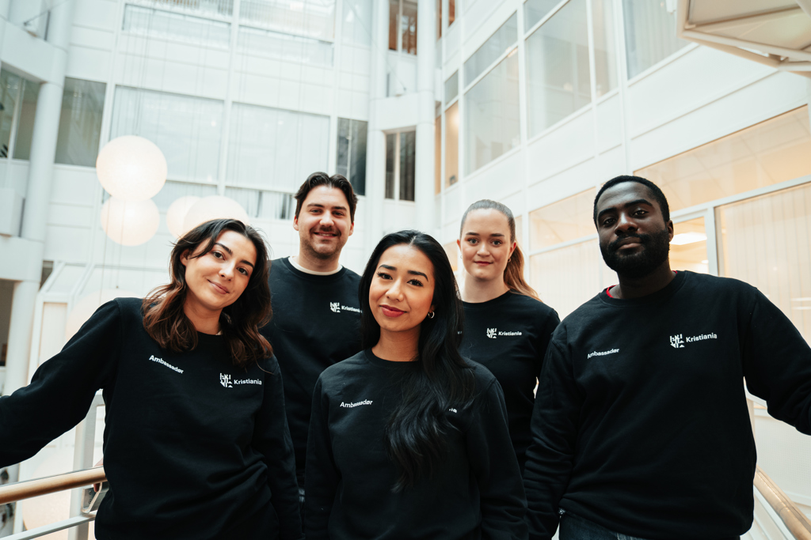
Nyhetsbrev
Vil du ha nyttig informasjon om studier, forskning eller arrangementer på e-post?
Med deg på